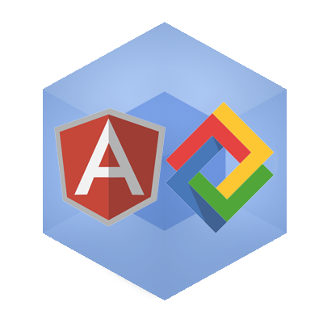

Part 2
Complex Webpack Dependencies
If you're unfamiliar with Webpack, you might want to checkout Part 1 of this Article on setting up a project with Webpack. This demo will continue from the previous article's code-base.
In this article we'll look at loading different types of dependencies: scripts, styles, fonts, etc. using Webpack. We'll also compare and contrast loading modules from NPM & Bower.

LumX
LumX is a great Material Design based CSS Framework built for Angular.
I would argue LumX looks better in both style and code-style when compared to angular-material. Again, that's largely a matter of opinion.
LumX will make a good example as it comes with a lot of different types of dependencies: scripts, styles, fonts. Let's see how Webpack can combine them into a single bundle.js file.
Bower Setup
Make a bower.json file.
bower init
Get some practice pressing enter really fast and agree to all the defaults.
Create a file called .bowerrc in the root. This will move all our downloaded bower components into the specified directory.
{
"directory": "app/bower_components"
}
We're going to need lumx, install it.
bower install --save lumx
We should let Angular know we're going to be using Lumx.
/app/index.js
module.exports = angular.module('app', [
'lumx'
]);
LumX comes with a party of dependencies. Look in app/bower_components and you'll see them all.
bower_components
├── angular
├── bourbon // Sass mixins
├── jquery
├── lumx
├── mdi // Material Design Icons
├── moment // time
└── velocity // jQuery animations
Bad news at this point.
Webpack Prefers NPM over Bower.
Don't worry, it'll work out.
NPM vs. Bower
It's true, Webpack can handle both CommonJS & AMD (asynchronous) modules. But Webpack has a preference: CommonJS.
Let's compare NPM and Bower for a minute.
NPM has nested dependencies, meaning that you can have different packages all loading different versions of lodash at the same time. It's very specific.
Bower, on the other hand, flattens dependencies. As such, it is often used on the front-end because, well, obviously, it isn't ideal to have 3 versions of jQuery loaded every time you visit a webpage.
Anyway, that information probably wasn't very helpful, but it's nice to know. To the point:
NPM and Bower aren't the same, and Webpack prefers NPM (CommonJS). According to the Docs:
In many cases modules from npm are better than the same module from bower. Bower mostly contain only concatenated/bundled files which are:
More difficult to handle for webpack More difficult to optimize for webpack Sometimes only useable without a module system So prefer to use the CommonJs-style module and let webpack build it. Source.
Luckily most packages have NPM & Bower equivalents, though there doesn't seem to be much interest in making LumX an NPM module. See the open issue and comment about how much you want more NPM!
Let's get emotional now and get rid of all of our Bower Lumx dependencies. If it's not NPM, it deserves a subtle level of disgust.
app/bower_components
├── bourbon
└── lumx
If you want to keep them from coming back, go into bower_components/lumx/bower.json and delete the dependencies. However, you'll just have to do this again if you update LumX in the future.
From here on in, we're going to try to NPM almost everything.
NPM! NPM!
Now let's NPM install the dependencies we just deleted from Bower.
/* NPM Package Name */
"dependencies": { ====================
"angular": "latest", // angular
"jquery": "latest", // jquery
"velocity": "latest", // velocity-animate
"moment": "latest", // moment
"bourbon": "latest", // node-bourbon (not necessary)
"mdi": "1.0.8-beta" // mdi
}
As you can see, there really are easy NPM equivalents. Install the dependencies.
npm install --save angular jquery velocity-animate moment mdi@1.0.8-beta
Require(NPM_Module)
It should still work. Now let's load some primary NPM dependencies in a file we'll call vendor.js.
/app/core/vendor.js
module.exports = function () {
/* must be in order */
require('jquery');
require('velocity-animate');
require('angular');
};
LumX seeks a few dependencies as globals, so we'll have to change this a little.
global attaches a value to the global context, likely the browser window.
/app/core/vendor.js
module.exports = function () {
global.$ = global.jQuery = require('jquery'); // $ for Lumx, jQuery for velocity
require('velocity-animate');
require('angular');
global.moment = require('moment'); // for LumX
};
Require(Bower_Component)
We'll have to inject some dependencies into LumX to get it to load properly. For this we need the imports-loader.
npm install -D imports-loader
Now we can require Lumx, even though it is a Bower package.
module.exports = function () {
global.$ = global.jQuery = require('jquery');
require('velocity-animate');
require('angular');
global.moment = require('moment');
require('imports?angular!../bower_components/lumx/dist/lumx.js');
};
imports? tells webpack to use the imports-loader, and angular! says to inject angular into the file. You could also inject jQuery, but it's already global.
There is probably an easier to way load Bower packages, if you know how, please post in the comments. This worked for me.
Note: another possible suggestion would be to load Lumx as an NPM module using debowerify, as posted by Mallim here. I plan to explore this option later.
Require(styles)
LumX depends on a Bourbon Sass mixins which also have an NPM equivalent: node-bourbon. However, LumX requires them using a relative path within the bower_components folder, so it's better just to keep the Bower Bourbon file.
Style sheets can be loaded using require('.path/to/_lumx.scss'), as in the previous article but due to the cascading nature of stylesheets, it's likely better to keep them in a root index.scss file. Simply import the Lumx styles.
/app/index.scss
@import './bower_components/lumx/dist/scss/_lumx';
Require(Fonts & Icons)
We'll need another loader for fonts & icons. Install the file-loader.
npm install -D file-loader
Add the loader to your webpack.config file and tell it to grab anything that looks like a font.
/webpack.config.js
{
test: /\.(woff|woff2|ttf|eot|svg)(\?v=[0-9]\.[0-9]\.[0-9])?$/,
loader: 'file-loader?name=res/[name].[ext]?[hash]'
}
Load up the Material Design Icons. The materialdesignicons.scss will point to our font files, which will get loaded by the file-loader.
/app/core/vendor.js
/* Styles */
require('../index.scss');
require('../../node_modules/mdi/scss/materialdesignicons.scss');
Create a test to see if icons and fonts are loading in index.html.
/app/index.html
<p class='fs-headline'>Icon Test: <i class="mdi mdi-twitter"></i> @Sh_McK</p>
Conclusion
We now have our LumX dependencies running: scripts, styles, fonts & icons, oh my!
We saw how Webpack can load different file formats, as well as handle different module types (NPM or Bower). Webpack prefers NPM.
Checkout Github for the full codebase.
In Part 3 we'll finally be able to take advantage of using Webpack with Angular for creating incredibly modular code.